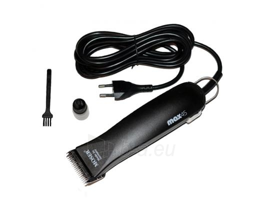
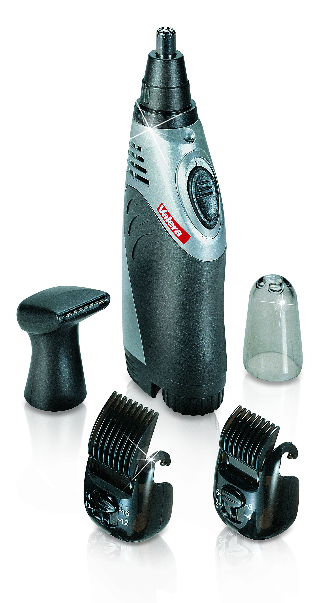

Plaukų kirpimo mašinėlės | Barzdakirpės

Visos kategorijos
Buitinė technikaBuitinė technika
ŠaldytuvaiŠaldytuvai
Šaldytuvai su šaldikliu apačioje Šaldytuvai su šaldikliu viršuje Šaldytuvai be šaldiklio Šaldytuvai Side-by-Side Vyno ir cigarų šaldytuvai Įmontuojami šaldytuvai ir šaldikliai Profesionali šaldymo ir brandinimo įranga Šaldikliai ir šaldymo dėžės Visi šaldytuvai Visi šaldytuvai ir šaldikliai Šaldymo įrangos priedai Nešiojami ir automobiliniai šaldytuvai Šaldikliai ir šaldymo dėžėsŠaldikliai ir šaldymo dėžės
Skalbimo mašinosSkalbimo mašinos
Skalbimo mašinos Skalbimo mašinos su džiovykle Džiovyklės Visos skalbimo mašinos ir džiovyklės Skalbimo mašinų priedai DžiovyklėsDžiovyklės
Džiovyklės Skalbyklės-džiovyklės ViryklėsViryklės
Elektrinės viryklės Dujinės viryklės su elektrine orkaite Dujinės viryklės su dujine orkaite Mini viryklės ir orkaitės Viryklių priedai OrkaitėsOrkaitės
KaitlentėsKaitlentės
Indukcinės kaitlentės Elektrinės kaitlentės Dujinės kaitlentės Kombinuotos ir Wok kaitlentės IndaplovėsIndaplovės
Indaplovės įmontuojamos Indaplovės laisvai pastatomos Visos indaplovės Indaplovių priedai GartraukiaiGartraukiai
Įmontuojami gartraukiai Gartraukiai tvirtinami prie sienos Gartraukiai tvirtinami prie lubų Gartraukiai pakabinami po spintele Gartraukių priedai Mikrobangų krosnelėsMikrobangų krosnelės
Mikrobangų krosnelės Mikrobangų krosnelių priedai Įmontuojama technikaĮmontuojama technika
Įmontuojami šaldytuvai Įmontuojamos indaplovės Įmontuojamos orkaitės Įmontuojamos kaitlentės Įmontuojami kavos aparatai Įmontuojamos mikrobangų krosnelės Įmontuojami gartraukiai Indų pašildymo stalčiai Smulki virtuvės technikaSmulki virtuvės technika
Kavos ir karštų gėrimų aparataiKavos ir karštų gėrimų aparatai
Kavos aparatai Kava Kavamalės Pieno plakikliai Arbatos aparatai Kavos aparatų priedai Maisto ruošimo ir smulkinimo technikaMaisto ruošimo ir smulkinimo technika
Sulčiaspaudės Virtuviniai kombainai Virtuvinių kombainų priedai Mėsmalės Pjaustyklės Blenderiai (trintuvai) Mikseriai (plakikliai) Kokteilinės Peilių galąstuvai Virtuvinės svarstyklės Ledų, ledukų, jogurto aparatai Virimo ir kepimo technikaVirimo ir kepimo technika
Virduliai Sumuštinių keptuvės Garų puodai Daugiafunkciniai puodai Elektriniai griliai Gruzdintuvės (fritiūrinės) Vaflinės, blynų ir spurgų keptuvės Skrudintuvai Spragėsių, cukraus vatos, smagaus maisto aparatai Duonkepės Mini orkaitės Mikrobangės krosnelės Mini viryklės Kiaušinių virtuvai Virtuvės ir stalo reikmenysVirtuvės ir stalo reikmenys
Keptuvės Puodai ir greitpuodžiai Virtuvės įrankiai Gertuvės, termosai, termo puodeliai Kita virtuvės technikaKita virtuvės technika
Vaisių džiovintuvai Termosai Vandens filtrai ir jonizatoriai Maisto atliekų smulkintuvai Vakuumatoriai ir vakuumavimo reikmenys Asmens ir namų priežiūraAsmens ir namų priežiūra
Valymo technikaValymo technika
Dulkių siurbliai Dulkių siurbliai robotai Dulkių siurbliai-šluotos Rankiniai dulkių siurbliai Dulkių siurblių priedai Langų valymo prietaisai Batų valymo mašinos Gariniai valytuvai Lygintuvai (laidynės)Lygintuvai (laidynės)
Lygintuvai Lyginimo sistemos Lyginimo lentos Siuvimo mašinosSiuvimo mašinos
Pūkų surinkėjaiPūkų surinkėjai
SvarstyklėsSvarstyklės
Klimato kontrolės technikaKlimato kontrolės technika
Šildytuvai ir radiatoriai Šildomos antklodės, kojų šildytuvai Rankų džiovintuvai Ventiliatoriai Kondicionieriai ir vėsintuvai Oro drėkintuvai Oro valytuvai (jonizatoriai) Oro sausintuvai (drėgmės surinkėjai) Orų stotelės (drėgmės matuokliai) Magnetinio lauko, radiacijos, nitratų matuokliai Klimato kontrolės prietaisų priedai Kūno priežiūros priemonėsKūno priežiūros priemonės
Barzdaskutės ir barzdakirpės Barzdaskučių priedai Epiliatoriai Nosies plaukų kirpimo mašinėlės Manikiūro ir pedikiūro priemonės Šildomos antklodės, kojų šildytuvai Dantų šepetėliai ir irigatoriai Kraujospūdžio matuokliai Plaukų priežiūros priemonėsPlaukų priežiūros priemonės
Plaukų džiovintuvai Plaukų džiovintuvų priedai Plaukų formavimo prietaisai Plaukų kirpimo mašinėlės Plaukų kirpimo mašinėlių priedai Šukos, šepečiai ir veidrodžiai Plaukų kirpimo žirklės, skustuvai Dantų šepetėliai ir irigatoriaiDantų šepetėliai ir irigatoriai
Dantų šepetėliai Tarpdančių irigatoriai Dantų šepetėlių antgaliai ir priedai Buitinė chemija, valymo priemonėsBuitinė chemija, valymo priemonės
Priešgaisrinė saugaPriešgaisrinė sauga
Dūmų, smalkių, dujų detektoriai Gesintuvai, nedegūs audeklai ir kt. Apsaugos sistemosApsaugos sistemos
Vaizdo stebėjimo kameros Vaizdo įrašymo įrenginiai Davikliai ir apsaugos sistemų priedai Sveikatos apsaugos priemonėsSveikatos apsaugos priemonės
Gyvūnų prekėsGyvūnų prekės
Kirpimo mašinėlės gyvūnams Gyvūnų reikmenys Vaizdo ir garso technikaVaizdo ir garso technika
TelevizoriaiTelevizoriai
Televizorių priedaiTelevizorių priedai
Televizorių laikikliai Skaitmeniniai TV imtuvai (priedėliai) SMART TV priedai Nuotolinio valdymo pultai TV antenos ir jų priedai Namų kino sistemosNamų kino sistemos
ProjektoriaiProjektoriai
Projektoriai Projektorių ekranai Projektorių laikikliai Media grotuvaiMedia grotuvai
Blu-Ray grotuvaiBlu-Ray grotuvai
DVD grotuvaiDVD grotuvai
Garso technikaGarso technika
Ausinės Kolonėlės Diktofonai Muzikiniai centrai Magnetolos Radijo imtuvai ir žadintuvai Patefonai MP3/MP4 grotuvai Namų kino sistema Auto aparatūraAuto aparatūra
Automagnetolos Automobiliniai garsiakalbiai Vaizdo registratoriai FM moduliatoriai Hi-Fi garso aparatūraHi-Fi garso aparatūra
Plokštelių grotuvai (patefonai) Hi-Fi garso kolonėlės Kabeliai ir adapteriaiKabeliai ir adapteriai
Vaizdo kabeliai USB kabeliai Tinklo kabeliai Adapteriai Laikikliai, stovai, staliukaiLaikikliai, stovai, staliukai
Televizorių laikikliai Projektorių laikikliai Kolonėlių laikikliai Visi laikikliai Kompiuterinė technikaKompiuterinė technika
KompiuteriaiKompiuteriai
Stacionarūs kompiuteriai Nešiojami kompiuteriai Planšetės Elektroninės skaityklės Nešiojami kompiuteriaiNešiojami kompiuteriai
Planšetiniai kompiuteriaiPlanšetiniai kompiuteriai
Knygų skaityklėsKnygų skaityklės
Stacionarūs kompiuteriaiStacionarūs kompiuteriai
MonitoriaiMonitoriai
Biuro technika ir reikmenysBiuro technika ir reikmenys
Spausdintuvai Daugiafunkciniai spausdintuvai Skeneriai Dokumentų naikikliai Spausdintuvų kasetės Popierius Kompiuterių aksesuaraiKompiuterių aksesuarai
Klaviatūros Pelės Kilimėliai Ausinės Kolonėlės Internetinės ir IP kameros Krepšiai, dėklai ir kuprinės Laidai Jungčių stotelės, stovai, aušintuvai Nepertraukiamo maitinimo šaltiniai (UPS) Išorinės baterijos (power bank) Nešiojamų kompiuterių įkrovikliai (pakrovėjai) Kortelių skaitytuvai, USB šakotuvai Tinklo įrangaTinklo įranga
Maršrutizatoriai Bevielio tinklo (Wi-Fi) adapteriai Komutatoriai Išorinės duomenų laikmenosIšorinės duomenų laikmenos
USB atmintinės Išoriniai kietieji diskai (HDD) Atminties kortelės CD/DVD/BD/MC laikmenos Programinė įrangaPrograminė įranga
Operacinės sistemos Antivirusinės programos Biuro programos Kompiuterių komponentaiKompiuterių komponentai
Maitinimo blokai (PSU) Vidiniai standieji diskai (HDD) SSD diskai ProjektoriaiProjektoriai
Projektoriai Projektorių ekranai Projektorių laikikliai PriedaiPriedai
Kabeliai ir adapteriaiKabeliai ir adapteriai
Vaizdo ir garso kabeliai LAN kabeliai USB kabeliai Adapteriai Elektros kabeliai, prailgintojai, adapteriai Spausdintuvų kasetėsSpausdintuvų kasetės
Originalūs toneriai Neoriginalūs toneriai Originalios rašalo kasetės Neoriginalios rašalo kasetės Fototechnika, vaizdo kamerosFototechnika, vaizdo kameros
FotoaparataiFotoaparatai
Kompaktiniai fotoaparatai Sisteminiai fotoaparatai Momentiniai fotoaparatai Vaizdo kameros ir registratoriaiVaizdo kameros ir registratoriai
Vaizdo kameros Veiksmo kameros Vaizdo registratoriai Foto ir video aksesuaraiFoto ir video aksesuarai
Fotoaparatų objektyvai ir jų priedai Fotoaparatų baterijos ir įkrovikliai Vaizdo kamerų baterijos ir įkrovikliai Dėklai, krepšiai fotoaparatams ir objektyvams LaikmenosLaikmenos
Atminties kortelės Video-audio juostos ir kitos laikmenos Baterijos, akumuliatoriai, įkrovikliaiBaterijos, akumuliatoriai, įkrovikliai
Baterijos USB įkrovikliai (pakrovėjai) Išorinės baterijos (power bank) Telefonai ir navigacijaTelefonai ir navigacija
Mobilieji telefonaiMobilieji telefonai
Išmanieji telefonai Mygtukiniai telefonai Fiksuoto ryšio telefonaiFiksuoto ryšio telefonai
Mobilių telefonų priedaiMobilių telefonų priedai
Laisvų rankų įranga Telefonų įkrovikliai Telefonų dėklai Telefonų laikikliai Ekrano apsauga Atminties kortelės Selfie lazdos Mobiliųjų telefonų kolonėlės Išorinės baterijos (power bank) Išmanieji laikrodžiai ir apyrankėsIšmanieji laikrodžiai ir apyrankės
GPS navigacijaGPS navigacija
GPS navigacija transportui Vaizdo registratoriai EcholotaiEcholotai
Laisvalaikis ir pramogosLaisvalaikis ir pramogos
Žaidimų kompiuterių priedaiŽaidimų kompiuterių priedai
Žaidimų kėdės ir stalai Dronai/RobotaiDronai/Robotai
Žvejybos reikmenysŽvejybos reikmenys
PaspirtukaiPaspirtukai
TurizmasTurizmas
Miegmaišiai Palapinės Išmanieji laikrodžiaiIšmanieji laikrodžiai
Išmanioji sodininkystėIšmanioji sodininkystė
Hamakai ir pakabinami krėslaiHamakai ir pakabinami krėslai
Gyvūnų prekėsGyvūnų prekės
Sporto prekėsSporto prekės
Miele parduotuvėMiele parduotuvė
Vertinimas 4.6 iš 5 | Viso 1221 Pagalba 8 700 80055 Vertinimas 4.6 iš 5 | Viso 1222 Prisijungti Buitinė technika Smulki virtuvės technika Asmens ir namų priežiūra Vaizdo ir garso technika Kompiuterinė technika Fototechnika, vaizdo kameros Telefonai ir navigacija Laisvalaikis ir pramogos Parduotuvė Šaldytuvai Šaldytuvai su šaldikliu apačioje Šaldytuvai su šaldikliu viršuje Šaldytuvai be šaldiklio Šaldytuvai Side-by-Side Vyno ir cigarų šaldytuvai Įmontuojami šaldytuvai ir šaldikliai Profesionali šaldymo ir brandinimo įranga Šaldikliai ir šaldymo dėžės Visi šaldytuvai Visi šaldytuvai ir šaldikliai Šaldymo įrangos priedai Nešiojami ir automobiliniai šaldytuvai Šaldikliai ir šaldymo dėžės Skalbimo mašinos Skalbimo mašinos Skalbimo mašinos su džiovykle Džiovyklės Visos skalbimo mašinos ir džiovyklės Skalbimo mašinų priedai Džiovyklės Džiovyklės Skalbyklės-džiovyklės Viryklės Elektrinės viryklės Dujinės viryklės su elektrine orkaite Dujinės viryklės su dujine orkaite Mini viryklės ir orkaitės Viryklių priedai Orkaitės Kaitlentės Indukcinės kaitlentės Elektrinės kaitlentės Dujinės kaitlentės Kombinuotos ir Wok kaitlentės Indaplovės Indaplovės įmontuojamos Indaplovės laisvai pastatomos Visos indaplovės Indaplovių priedai Gartraukiai Įmontuojami gartraukiai Gartraukiai tvirtinami prie sienos Gartraukiai tvirtinami prie lubų Gartraukiai pakabinami po spintele Gartraukių priedai Mikrobangų krosnelės Mikrobangų krosnelės Mikrobangų krosnelių priedai Įmontuojama technika Įmontuojami šaldytuvai Įmontuojamos indaplovės Įmontuojamos orkaitės Įmontuojamos kaitlentės Įmontuojami kavos aparatai Įmontuojamos mikrobangų krosnelės Įmontuojami gartraukiai Indų pašildymo stalčiai Kavos ir karštų gėrimų aparatai Kavos aparatai Kava Kavamalės Pieno plakikliai Arbatos aparatai Kavos aparatų priedai Maisto ruošimo ir smulkinimo technika Sulčiaspaudės Virtuviniai kombainai Virtuvinių kombainų priedai Mėsmalės Pjaustyklės Blenderiai (trintuvai) Mikseriai (plakikliai) Kokteilinės Peilių galąstuvai Virtuvinės svarstyklės Ledų, ledukų, jogurto aparatai Virimo ir kepimo technika Virduliai Sumuštinių keptuvės Garų puodai Daugiafunkciniai puodai Elektriniai griliai Gruzdintuvės (fritiūrinės) Vaflinės, blynų ir spurgų keptuvės Skrudintuvai Spragėsių, cukraus vatos, smagaus maisto aparatai Duonkepės Mini orkaitės Mikrobangės krosnelės Mini viryklės Kiaušinių virtuvai Virtuvės ir stalo reikmenys Keptuvės Puodai ir greitpuodžiai Virtuvės įrankiai Gertuvės, termosai, termo puodeliai Kita virtuvės technika Vaisių džiovintuvai Termosai Vandens filtrai ir jonizatoriai Maisto atliekų smulkintuvai Vakuumatoriai ir vakuumavimo reikmenys Valymo technika Dulkių siurbliai Dulkių siurbliai robotai Dulkių siurbliai-šluotos Rankiniai dulkių siurbliai Dulkių siurblių priedai Langų valymo prietaisai Batų valymo mašinos Gariniai valytuvai Lygintuvai (laidynės) Lygintuvai Lyginimo sistemos Lyginimo lentos Siuvimo mašinos Pūkų surinkėjai Svarstyklės Klimato kontrolės technika Šildytuvai ir radiatoriai Šildomos antklodės, kojų šildytuvai Rankų džiovintuvai Ventiliatoriai Kondicionieriai ir vėsintuvai Oro drėkintuvai Oro valytuvai (jonizatoriai) Oro sausintuvai (drėgmės surinkėjai) Orų stotelės (drėgmės matuokliai) Magnetinio lauko, radiacijos, nitratų matuokliai Klimato kontrolės prietaisų priedai Kūno priežiūros priemonės Barzdaskutės ir barzdakirpės Barzdaskučių priedai Epiliatoriai Nosies plaukų kirpimo mašinėlės Manikiūro ir pedikiūro priemonės Šildomos antklodės, kojų šildytuvai Dantų šepetėliai ir irigatoriai Kraujospūdžio matuokliai Plaukų priežiūros priemonės Plaukų džiovintuvai Plaukų džiovintuvų priedai Plaukų formavimo prietaisai Plaukų kirpimo mašinėlės Plaukų kirpimo mašinėlių priedai Šukos, šepečiai ir veidrodžiai Plaukų kirpimo žirklės, skustuvai Dantų šepetėliai ir irigatoriai Dantų šepetėliai Tarpdančių irigatoriai Dantų šepetėlių antgaliai ir priedai Buitinė chemija, valymo priemonės Priešgaisrinė sauga Dūmų, smalkių, dujų detektoriai Gesintuvai, nedegūs audeklai ir kt. Apsaugos sistemos Vaizdo stebėjimo kameros Vaizdo įrašymo įrenginiai Davikliai ir apsaugos sistemų priedai Sveikatos apsaugos priemonės Gyvūnų prekės Kirpimo mašinėlės gyvūnams Gyvūnų reikmenys Televizoriai Televizorių priedai Televizorių laikikliai Skaitmeniniai TV imtuvai (priedėliai) SMART TV priedai Nuotolinio valdymo pultai TV antenos ir jų priedai Namų kino sistemos Projektoriai Projektoriai Projektorių ekranai Projektorių laikikliai Media grotuvai Blu-Ray grotuvai DVD grotuvai Garso technika Ausinės Kolonėlės Diktofonai Muzikiniai centrai Magnetolos Radijo imtuvai ir žadintuvai Patefonai MP3/MP4 grotuvai Namų kino sistema Auto aparatūra Automagnetolos Automobiliniai garsiakalbiai Vaizdo registratoriai FM moduliatoriai Hi-Fi garso aparatūra Plokštelių grotuvai (patefonai) Hi-Fi garso kolonėlės Kabeliai ir adapteriai Vaizdo kabeliai USB kabeliai Tinklo kabeliai Adapteriai Laikikliai, stovai, staliukai Televizorių laikikliai Projektorių laikikliai Kolonėlių laikikliai Visi laikikliai Kompiuteriai Stacionarūs kompiuteriai Nešiojami kompiuteriai Planšetės Elektroninės skaityklės Nešiojami kompiuteriai Planšetiniai kompiuteriai Knygų skaityklės Stacionarūs kompiuteriai Monitoriai Biuro technika ir reikmenys Spausdintuvai Daugiafunkciniai spausdintuvai Skeneriai Dokumentų naikikliai Spausdintuvų kasetės Popierius Kompiuterių aksesuarai Klaviatūros Pelės Kilimėliai Ausinės Kolonėlės Internetinės ir IP kameros Krepšiai, dėklai ir kuprinės Laidai Jungčių stotelės, stovai, aušintuvai Nepertraukiamo maitinimo šaltiniai (UPS) Išorinės baterijos (power bank) Nešiojamų kompiuterių įkrovikliai (pakrovėjai) Kortelių skaitytuvai, USB šakotuvai Tinklo įranga Maršrutizatoriai Bevielio tinklo (Wi-Fi) adapteriai Komutatoriai Išorinės duomenų laikmenos USB atmintinės Išoriniai kietieji diskai (HDD) Atminties kortelės CD/DVD/BD/MC laikmenos Programinė įranga Operacinės sistemos Antivirusinės programos Biuro programos Kompiuterių komponentai Maitinimo blokai (PSU) Vidiniai standieji diskai (HDD) SSD diskai Projektoriai Projektoriai Projektorių ekranai Projektorių laikikliai Priedai Kabeliai ir adapteriai Vaizdo ir garso kabeliai LAN kabeliai USB kabeliai Adapteriai Elektros kabeliai, prailgintojai, adapteriai Spausdintuvų kasetės Originalūs toneriai Neoriginalūs toneriai Originalios rašalo kasetės Neoriginalios rašalo kasetės Fotoaparatai Kompaktiniai fotoaparatai Sisteminiai fotoaparatai Momentiniai fotoaparatai Vaizdo kameros ir registratoriai Vaizdo kameros Veiksmo kameros Vaizdo registratoriai Foto ir video aksesuarai Fotoaparatų objektyvai ir jų priedai Fotoaparatų baterijos ir įkrovikliai Vaizdo kamerų baterijos ir įkrovikliai Dėklai, krepšiai fotoaparatams ir objektyvams Laikmenos Atminties kortelės Video-audio juostos ir kitos laikmenos Baterijos, akumuliatoriai, įkrovikliai Baterijos USB įkrovikliai (pakrovėjai) Išorinės baterijos (power bank) Mobilieji telefonai Išmanieji telefonai Mygtukiniai telefonai Fiksuoto ryšio telefonai Mobilių telefonų priedai Laisvų rankų įranga Telefonų įkrovikliai Telefonų dėklai Telefonų laikikliai Ekrano apsauga Atminties kortelės Selfie lazdos Mobiliųjų telefonų kolonėlės Išorinės baterijos (power bank) Išmanieji laikrodžiai ir apyrankės GPS navigacija GPS navigacija transportui Vaizdo registratoriai Echolotai Žaidimų kompiuterių priedai Žaidimų kėdės ir stalai Dronai/Robotai Žvejybos reikmenys Paspirtukai Turizmas Miegmaišiai Palapinės Išmanieji laikrodžiai Išmanioji sodininkystė Hamakai ir pakabinami krėslai Gyvūnų prekės Sporto prekės 2 Ogmina Asmens ir namų priežiūra Plaukų priežiūros priemonės Plaukų kirpimo mašinėlėsPlaukų kirpimo mašinėlės
Plaukų kirpimo mašinėlės (trimeriai) ne tik profesionaliam, bet ir kasdieniam naudojimui. Moser, Oster, Philips, Panasonic, Braun ir Valera prekinių ženklų plaukų kirpimo mašinėlės skirtos galvos, ausų, nosies, kūno, barzdos plaukų bei augintinių kailiuko kirpimui. Plaukų kirpimo mašinėlės sistema su skirtingais antgaliais gali atlikti daugiau nei vieną funkciją ir kirpti skirtingo ilgio plaukus. Platus plaukų kirpimo mašinėlės antgalis padės greičiau apkirpti plaukus, o siauru antgaliu lengviau pasieksite sunkiai prieinamas vietas už ausų, ant sprando.
Prekių filtravimas Kaina 18.989999771118 € 269 € Gamintojas Valyti visus filtrus PHILIPS (15) BRAUN (6) PANASONIC (1) Nuimama kirpimo galvutė Valyti visus filtrus Taip (48) Ne (20) Paskirtis Valyti visus filtrus Plaukams (53) Barzdai (17) Kantavimui (13) Gyvūnams (12) Nosiai/ausims (8) Kūnui (7) Antakiams (2) Maitinimas Valyti visus filtrus Akumuliatoriaus arba tinklo (24) Tinklo (23) Akumuliatorinis (20) Nuo baterijų (1) Tipas Valyti visus filtrus Profesionali (41) Buitinė (27) Rodyti: Pasirinkite Pasirinkite Pavadinimas (A - Z) Pavadinimas (Z - A) Kaina (Mažiausia Didžiausia) Kaina (Didžiausia Mažiausia) Rodyti: Pasirinkite Pavadinimas (A - Z) Pavadinimas (Z - A) Kaina (Mažiausia Didžiausia) Kaina (Didžiausia Mažiausia) Rodyti po: 36 72 Rodyti po: 36 Pasiekėte didžiausią lyginamų prekių skaičių. Išparduota Plaukų kirpimo mašinėlė OSTER 616-50 SOFT TOUCH Šių dienų kirpykla tai ne tik vieta kur kerpa klientams plaukus, tai vieta kur kirpėjai kuria šedevrus. Kirpėjai didžiuojasi savo darbu, o įžengę kirpyklon grįžtame į praeitį ir prisimename paveldą. Laiko patikrinti produktai šedevrams kurti! Profesional... Išparduota 125,00 € Pasiekėte didžiausią lyginamų prekių skaičių. Išparduota Plaukų kirpimo mašinėlė MOSER 1591-0070 T-Cut Profesionali, galinga ir ergonomiška belaidė plaukakirpė idealiai tinkanti kantavimui. Nerūdijančio plieno T-Blade kirpimo galvutė, kirpimo ilgis 0,4 mm. Nuimama, greitai keičiama kirpimo galvutė. Didelis kitokių kirpimo galvučių pasirinkimas . Nuolatin... Išparduota 99,00 € Pasiekėte didžiausią lyginamų prekių skaičių. Išparduota -2,00 €e
kaina Skutimosi mašinėlė kūnui PHILIPS BG3010/15 Išparduota 28,99 € 30,99 € Pasiekėte didžiausią lyginamų prekių skaičių. Išparduota -3,00 €e
kaina Skutimosi mašinėlė kūnui PHILIPS BG5020/15 Išparduota 46,99 € 49,99 € Pasiekėte didžiausią lyginamų prekių skaičių. Išparduota -1,00 €e
kaina Multi kirptuvas 9in1 PHILIPS MG3740/15 Tikslus kirptuvas, nosies ir ausų plaukų kirptuvas, nuo 3 iki 7 mm reguliuojamos šukos barzdai, 2 šukos barzdelei, 3 plaukų šukos. Veikos laikas 60 min., komplekte dėtuvė. Išparduota 34,99 € 35,99 € Pasiekėte didžiausią lyginamų prekių skaičių. Išparduota Plaukų kirpimo mašinėlė gyvūnams MOSER 1245-0070 Max45 Profesionali kerpamoji mašinėlė gyvūnams su nuimama galvute. Komplekte yra 1 mm „StarBlade“ galvutė (plotis 49 mm). 2 antgaliai metaliniais dantukais (10 mm ir 16 mm). Besisukantis ekscentrinis variklis, geras aušinimas, oro filtras, 2 greičiai: 2400/3000... Išparduota 145,00 € Pasiekėte didžiausią lyginamų prekių skaičių. Išparduota Plaukų kirpimo mašinėlė gyvūnams MOSER 1230-0078 Rex Profesionali plaukakirpė gyvūnams. Nerūdijančio plieno StarBlade kirpimo galvutė, kirpimo ilgis 0,7 - 3 mm., MultiClick kirpimo ilgio reguliavimo sistema fiksuojama 6 pozicijose. Poliarizuotas švytuoklinis variklis, maža vibracija. Komplekte 6 mm ir 9... Išparduota 79,00 € Pasiekėte didžiausią lyginamų prekių skaičių. Išparduota Multi kirptuvas 11in1 PHILIPS MG5730/15 Išparduota 49,99 € Pasiekėte didžiausią lyginamų prekių skaičių. Išparduota Plaukų kirpimo mašinėlė OSTER 606-95 ProPower Šių dienų kirpykla tai ne tik vieta kur kerpa klientams plaukus, tai vieta kur kirpėjai kuria šedevrus. Kirpėjai didžiuojasi savo darbu, o įžengę kirpyklon grįžtame į praeitį ir prisimename paveldą. Laiko patikrinti produktai šedevrams kurti! Profesional... Išparduota 97,00 € Pasiekėte didžiausią lyginamų prekių skaičių. Išparduota Plaukų kirpimo mašinėlė MOSER 1230-0051 Primat Profesionali plaukakirpė. Nerūdijančio plieno StarBlade kirpimo galvutė, kirpimo ilgis 0,7 - 3 mm., MultiClick kirpimo ilgio reguliavimo sistema fiksuojama 6 pozicijose. Poliarizuotas švytuoklinis variklis, maža vibracija. Komplekte 4,5 mm ir 9 mm kir... Išparduota 79,00 € Pasiekėte didžiausią lyginamų prekių skaičių. Išparduota Plaukų kirpimo mašinėlė MOSER 1230-0053 Primat titan Profesionali plaukakirpė. Nerūdijančio plieno StarBlade kirpimo galvutė, kirpimo ilgis 0,7 - 3 mm., MultiClick kirpimo ilgio reguliavimo sistema fiksuojama 6 pozicijose. Poliarizuotas švytuoklinis variklis, maža vibracija. Komplekte 4,5 mm ir 9 mm kir... Išparduota 79,00 € Pasiekėte didžiausią lyginamų prekių skaičių. Išparduota Plaukų kirpimo mašinėlė OSTER 97-44 Šių dienų kirpykla tai ne tik vieta kur kerpa klientams plaukus, tai vieta kur kirpėjai kuria šedevrus. Kirpėjai didžiuojasi savo darbu, o įžengę kirpyklon grįžtame į praeitį ir prisimename paveldą. Laiko patikrinti produktai šedevrams kurti! Profesional... Išparduota 179,00 € Pasiekėte didžiausią lyginamų prekių skaičių. Išparduota Plaukų kirpimo mašinėlė OSTER 076120-310 AdjustPro Profesionali JAV gamintojo plaukakirpė sumažintos vibracijos švytuokliniu varikliu ir reguliuojamo ilgio kirpimo galvute - tai klasika ir paveldas! Išparduota 73,00 € Pasiekėte didžiausią lyginamų prekių skaičių. Išparduota Plaukų kirpimo mašinėlė OSTER Golden A5 5-50 Profesionali plaukų kirpimo mašinėlė gyvūnams (tinka ir žmonėms). 2 greičiai (2100/3200 jud./min). Sustiprinta korpuso konstrukcija. Didelis kirpimo galvučių pasirinkimas. Idealiai tinka įvairiems kailiams bei plaukams. Keičiami angliukai varikliui bei v... Išparduota 189,00 € Pasiekėte didžiausią lyginamų prekių skaičių. Išparduota Plaukų kirpimo mašinėlė MOSER 1245-0060 Class45 Profesionali, galinga ir ergonomiška plaukakirpė. Nerūdijančio plieno StarBlade kirpimo galvutė, kirpimo ilgis 1,0 mm. 2 greičiai, didelė papildomai pasirenkamų galvučių bei antgalių gama. Nuimama, greitai keičiama kirpimo galvutė. Besisukantis ekscentr... Išparduota 145,00 € Pasiekėte didžiausią lyginamų prekių skaičių. Išparduota Plaukų kirpimo mašinėlė MOSER 1871-0082 ChromStylePro balta Profesionali įkraunama plaukakirpė. Rekomenduojama dirbti kartu su dailinimui skirta plaukakirpe Moser ChroMiniPro. Nuimama galvutė „MagicBlade“ (plotis 46 mm). Veikia nuo akumuliatoriaus arba tinklo, talpus Li-ion akumuliatorius (greitas įkrovimas, iki 9... Išparduota 165,00 € Pasiekėte didžiausią lyginamų prekių skaičių. Išparduota -22%e
kaina n Kirpimo rinkinys BRAUN MGK7220 10in1 Wet&Dry, multi kirptuvas Multi kirptuvas 10 viename. AutoSense technologijos variklis prisitaiko prie jūsų plaukų tankio ir su kiekvienu judesiu užtikrina itin veiksmingą ir komfortišką kirpimą. Ypač aštrūs, neriboto tarnavimo laiko peiliai, tiksliam kirpimui be pešimo ir rovimo.... Išparduota 66,29 € 84,99 € Pasiekėte didžiausią lyginamų prekių skaičių. Išparduota -20% Barzdakirpė BRAUN BT 7220 Galingas įrankis, skirtas formuoti barzdos ir galvos plaukus būtent taip, kaip jūs norite. AutoSense technologijos variklis prisitaiko prie jūsų barzdos tankio ir su kiekvienu judesiu užtikrina itin veiksmingą ir komfortišką kirpimą. Ypač aštrūs, neriboto... Išparduota 59,99 € 74,99 € Pasiekėte didžiausią lyginamų prekių skaičių. Išparduota -21%e
kaina Barzdakirpė BRAUN BT 5242 Galingas įrankis, skirtas formuoti barzdos ir galvos plaukus būtent taip, kaip jūs norite. AutoSense technologijos variklis prisitaiko prie jūsų barzdos tankio ir su kiekvienu judesiu užtikrina itin veiksmingą ir komfortišką kirpimą. Ypač aštrūs, neriboto... Išparduota 44,99 € 56,99 € Pasiekėte didžiausią lyginamų prekių skaičių. Išparduota -26%e
kaina Barzdakirpė BRAUN BT 3222 Barzdos kirptuvas – puikus įrankis savimi pasitikinčio ir išpuoselėto stiliaus kūrimui. 20 ilgio nustatymų ir išmanusis tikslus diskelis padeda visiškai kontroliuoti stilių. 20 tikslių ilgio nustatymų 0,5 mm intervalais nuo 0,5 mm iki 10 mm. Absoliutus ti... Išparduota 27,99 € 37,99 € Pasiekėte didžiausią lyginamų prekių skaičių. Išparduota Plaukų kirpimo mašinėlė MOSER 1877-0050 Chrom2Style Profesionali įkraunama plaukakirpė. Nuimama galvutė „DiamondBlade“ (plotis 46 mm). Veikia nuo akumuliatoriaus arba tinklo, talpus Li-ion akumuliatorius (greitas įkrovimas, iki 120 min. darbo laikas). Galvutės kirpimo ilgis 0,7 - 3 mm., nuolatinės srovės v... Išparduota 169,00 € Pasiekėte didžiausią lyginamų prekių skaičių. Išparduota Plaukų kirpimo mašinėlė OSTER 97-44 LE Skull Šių dienų kirpykla tai ne tik vieta kur kerpa klientams plaukus, tai vieta kur kirpėjai kuria šedevrus. Kirpėjai didžiuojasi savo darbu, o įžengę kirpyklon grįžtame į praeitį ir prisimename paveldą. Laiko patikrinti produktai šedevrams kurti! Profesional... Išparduota 179,00 € Pasiekėte didžiausią lyginamų prekių skaičių. Išparduota Plaukų kirpimo mašinėlė OSTER 023-51 Fast Feed Šių dienų kirpykla tai ne tik vieta kur kerpa klientams plaukus, tai vieta kur kirpėjai kuria šedevrus. Kirpėjai didžiuojasi savo darbu, o įžengę kirpyklon grįžtame į praeitį ir prisimename paveldą. Laiko patikrinti produktai šedevrams kurti! Profesional... Išparduota 97,00 € Pasiekėte didžiausią lyginamų prekių skaičių. Išparduota Plaukų kirpimo mašinėlė MOSER 1588-0051 Li+Pro2 Mini Profesionali įkraunama plaukakirpė skirta tiksliems dailinimo darbams. Idealus priedas prie kerpamosios mašinėlės Moser Li+Pro2. Nuimama galvutė „Diamond Blade“ (plotis 32 mm). Veikia nuo akumuliatoriaus arba tinklo, talpus Li-ion akumuliatorius (greitas... Išparduota 135,00 € Pasiekėte didžiausią lyginamų prekių skaičių. Išparduota Plaukų kirpimo mašinėlė MOSER 1888-0051 Li+Pro2 Profesionali įkraunama plaukakirpė. Kartu patartina naudoti dailinimui skirtą plaukakirpę Moser Li+Pro2 Mini. Nuimama galvutė „Diamond Blade“ (plotis 46 mm) - iki 40 kartų atsparesnė dilimui. Veikia nuo akumuliatoriaus arba tinklo, talpus Li-ion akumuliat... Išparduota 219,00 € Pasiekėte didžiausią lyginamų prekių skaičių. Išparduota Plaukų kirpimo mašinėlė MOSER 1874-0053 GenioPro Fading Edition Profesionali įkraunama plaukakirpė. Nuimama galvutė „FadingBlade“ idealiai tinka puikiems feidams kurti (plotis 46 mm). Veikia nuo akumuliatoriaus, 2 talpūs Li-ion akumuliatoriai užtikrina nepertraukiamą veiką (greitas įkrovimas 80 min, iki 105 min. dar... Išparduota 175,00 € Pasiekėte didžiausią lyginamų prekių skaičių. Išparduota -4,00 € Plaukų kirpimo mašinėlė MOSER 1586-0051 NEOliner juoda Profesionali įkraunama plaukakirpė skirta tiksliems dailinimo darbams. Idealus priedas prie kerpamosios mašinėlės Moser NEO. Nuimama galvutė „MagicBlade“ (plotis 32 mm). Ergonomiška. Veikia nuo tinklo arba akumuliatoriaus, talpus Ni-MH akumuliatorius (iki... Išparduota 69,00 € 73,00 € Pasiekėte didžiausią lyginamų prekių skaičių. Išparduota Plaukų kirpimo mašinėlė MPM MMW-01 Įkraunama plaukų kirpimo mašinėlė. ceramic blades antgalio geležtės. 5 lygių kirpimo ilgio reguliavimas: nuo 4 iki 30 mm. Gali veikti ir nuo tinklo. Akumuliatoriaus įkrovimo indikatorius. NiMH akumuliatorius; jokio atminties efekto (iki 10 min. nepertra... Išparduota 23,99 € Pasiekėte didžiausią lyginamų prekių skaičių. Išparduota -12% n Plaukų kirpimo mašinėlė MOSER 1886-0052 Academy NEO, juoda MOSER Academy NEO rinkinys. Profesionali įkraunama plaukakirpė. Nuimama galvutė „MagicBlade“ (plotis 46 mm). Ergonomiška. Veikia nuo tinklo arba akumuliatoriaus, talpus Ni-MH akumuliatorius (iki 90 min. darbo laikas). Galvutės kirpimo ilgio reguliavimas n... Išparduota 105,00 € 119,00 € Pasiekėte didžiausią lyginamų prekių skaičių. Išparduota -25% Plaukų kirpimo mašinėlė gyvūnams MOSER 1586-0061 Prima Set Profesionali įkraunama plaukakirpė gyvūnams, skirta tiksliems dailinimo darbams. Nuimama galvutė „StarBlade“ (plotis 32 mm). Ergonomiška. Veikia nuo tinklo arba akumuliatoriaus, talpus Ni-MH akumuliatorius (iki 100 min. darbo laikas). Galvutės kirpimo ilg... Išparduota 59,00 € 79,00 € Pasiekėte didžiausią lyginamų prekių skaičių. Išparduota -1,00 €e
kaina Barzdakirpė PHILIPS BT3206/14 Išparduota 21,99 € 22,99 € Pasiekėte didžiausią lyginamų prekių skaičių. Išparduota -2,00 €e
kaina Barzdakirpė PHILIPS BT3226/14 Išparduota 35,99 € 37,99 € Pasiekėte didžiausią lyginamų prekių skaičių. Išparduota -1,00 €e
kaina Skutimosi mašinėlė kūnui PHILIPS BG105/10 Išparduota 21,99 € 22,99 € Pasiekėte didžiausią lyginamų prekių skaičių. Išparduota Plaukų kirpimo mašinėlė gyvūnams MOSER 1250-0052 MAX50 Profesionali kerpamoji mašinėlė gyvūnams su nuimama galvute, ergonomiška, maitinimo blokas ant laido, todėl mašinėlė labai lengva. Komplekte yra 1 mm „StarBlade“ galvutė (plotis 41 mm). 2 antgaliai metaliniais dantukais (6 mm ir 13 mm). Besisukantis eksce... Išparduota 177,00 € Pasiekėte didžiausią lyginamų prekių skaičių. Išparduota -23% Plaukų kirpimo mašinėlė MOSER 1586-0050 NEOliner Profesionali įkraunama plaukakirpė skirta tiksliems dailinimo darbams. Idealus priedas prie kerpamosios mašinėlės Moser NEO. Nuimama galvutė „MagicBlade“ (plotis 32 mm). Ergonomiška. Veikia nuo tinklo arba akumuliatoriaus, talpus Ni-MH akumuliatorius (iki... Išparduota 59,00 € 77,00 € Pasiekėte didžiausią lyginamų prekių skaičių. Išparduota Plaukų kirpimo mašinėlė MOSER 1871-0081 ChromStylePro juoda Profesionali įkraunama plaukakirpė. Rekomenduojama dirbti kartu su dailinimui skirta plaukakirpe Moser ChroMiniPro. Nuimama galvutė „MagicBlade“ (plotis 46 mm). Veikia nuo akumuliatoriaus arba tinklo, talpus Li-ion akumuliatorius (greitas įkrovimas, iki 9... Išparduota 159,00 € 1 2 Šiuo metu esate 1 puslapyje iš 2 Apie įmonę Apie įmonę Kontaktai Karjera Klientų atsiliepimai Pirkėjams SVARBU: pasikeitimai dėl COVID19 pandemijos Pristatymas ir apmokėjimas Garantija ir grąžinimas Naujienlaiškio prenumerata Taisyklės Privatumo politika Pratęsta garantija Būk atsakingas – atiduok perdirbimui Verta žinoti2020-10-27
Elektrinis grilis – gaminkite kitaip
2020-10-22
Naujas Daewoo vardas – Winia
2020-10-21
Naujieji Dell Vostro 5401 jau mūsų asortimente!
Rodyti daugiau Didmenos atstovams Domina bendradarbiavimas perkant prekes, ar galbūt norite pasiūlyti savo prekes? Parašykite mums2015-2020 © UAB “Ogmina” - Visos teisės saugomos.
Sprendimas: NFQ Technologies
Šioje svetainėje mes naudojame slapukus, nes to reikia sklandžiam aptarnavimo internetu procesui. Daugiau apie slapukus galite sužinoti čia . Naršymą tęskite paspaudę mygtuką „SUTINKU“ SUTINKU Privatumo politika Šioje svetainėje naudojami slapukai, kad būtų galima teikti paslaugas, suasmeninti skelbimus ir analizuoti srautą. Informacija apie šios svetainės naudojimą bendrinama su „Google“. Naudodami šią svetainę sutinkate, kad joje gali būti naudojami slapukai.